Reading Bitcoin’s tides
A data product that updates itself every day, taken from problem framing and testing to launch and operation. It turns 17 public indicators and the halving cycle into two numbers you can act on: a top signal and a bottom signal. A cycle strategy, backtested round by round, sits on top.
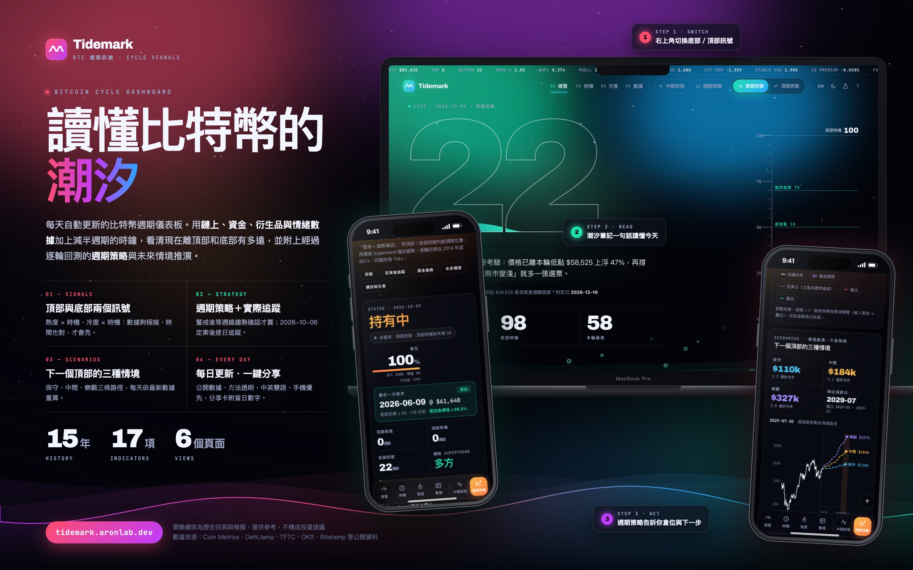
Project overview
My part: the code was written with an AI coding tool. I was the one who set the requirements, made the calls, and signed off on the result.
The brief, on one page
Classic on-chain indicators peak lower every cycle (MVRV 4.7 → 4.4 → 2.9 → 2.3), so fixed thresholds fire later and later. Mid-cycle highs also run hotter than the real top. If you only ask “is it hot?”, you get the alarm at the wrong time.
Long-term Bitcoin holders who want to know where we are in the cycle. Also automated workflows that read the data each day to write a daily report (the JSON feed).
A top = data that is extreme enough × timing inside the historical window. The signal fires only when both are true. That rules out false alarms at mid-cycle highs.
- Each of the last three tops is the highest signal of its cycle
- Zero false alarms at fake bottoms
- Updates itself every day, no manual upkeep
No trading · No personal holdings stored · No paid data in v1 · No price forecasts or probabilities
I reframed the question from “is it hot?” to “are heat and timing both in place?”. I wrote down the success criteria and the non-goals first, and used them to judge every later decision.
Key decisions and trade-offs
| Decision | Options | Choice | Why, and the cost |
|---|---|---|---|
| Signal structure | Heat only / heat × timing | Heat × timing | With heat alone, mid-cycle highs score hotter than real tops. The cost: it relies on the four-year cycle holding. Listed as a known limit. |
| Holder-behavior data | Paid CryptoQuant / free 4-year data / leave out | Leave out | Four years of history can’t be tested across cycles. A trial made the top signal worse, and the license bars public use. |
| Mid-term feature | Precise buy/sell signals / a status panel | Status panel | Research on 48 indicators found nothing reliable for mid-term turns. So no signal that could mislead. |
| Strategy results | Backtest only / plus live tracking | Freeze date + live tracking | The rules were picked after seeing history. A freeze date lets future data test the product. |
| Future scenarios | One forecast line / three scenarios + odds / three scenarios, no odds | Three scenarios, no odds | There are only 3–4 cycles to learn from. Odds would fake a precision we don’t have. |
| Daily schedule | GitHub schedule / external trigger | External trigger + backup | GitHub’s schedule ran about 5 hours late in tests, so the daily report would read stale data. |
| Information architecture | Mid-term as page 2 / its own button | Its own button | Pages 01–04 are all about tops and bottoms. Mid-term isn’t, so mixing it in would confuse people. |
I’d rather ship one feature less than one feature that can’t be trusted. Matching what a feature promises to how strong the evidence is — that is a product decision too.
Test first, ship only what passes
The product has one rule: every new indicator is tested against past tops, past bottoms and “false signals” (mid-cycle highs and mid-cycle dips). It ships only if it passes. In total: 48 candidate indicators, about 10 strategy designs, and 700+ backtests.
Later I switched to fixing the candidates and parameters before running the test, so I couldn’t pick rules after seeing the results. Most answers were “this doesn’t work”. Those negative results are published in the product docs, right next to the ones that worked.
| What we tested | Result | Decision |
|---|---|---|
| 48 free indicators for mid-term turns (fit on 2014–19, tested on 2020–26) | None ranked the final top above mid-cycle highs | Keep structure |
| Power Law trend multiple | Three bottoms at 0.24–0.48×, no false alarms at fake bottoms; top readings fall fast each cycle | Added (bottoms) |
| Pi Cycle Top | The last two tops read the same as the 2019 fake top | Not used |
| Exchange net inflow | Zero at the 2021 and 2025 tops; money now moves through ETFs and custodians | Removed |
| Long-term holder SOPR, CDD (4 years of free data) | The 2024-03 fake top scored 100, the real 2025 top 48 — it made the top signal worse | Not used |
| Delta Price | Separates real and fake bottoms, but correlates 0.67 with MVRV; adding it slightly hurt separation | Reference only |
| Dodging pullbacks inside bull markets (7 trend filters) | Lost to buy-and-hold in all three bull markets | Not used |
| Buying dips for short trades (4 exit methods) | After 2020, all lost to entering on a random day | Not used |
Signal model: data × clock
- Heat: on-chain valuation 44%, capital flows 25%, leverage 19%, sentiment 12%
- Timing: days since halving and days since this cycle’s low, compared with the last three tops
- ≥ 50 top window, ≥ 70 high alert
- Coldness: valuation 50%, miners 30%, price structure 20%
- Bottom timing: days since the last top and since the last halving, compared with the last three bottoms
- ≥ 50 bottom zone, ≥ 70 strong bottom
| Category | Indicators | Scoring |
|---|---|---|
| On-chain valuation | MVRV Z-score, NUPL, Puell Multiple, realized price multiple | Cycle method: fit the falling trend of the last four tops to estimate this cycle’s top |
| Capital flows | ETF 30-day net inflow, ETF flow momentum, stablecoin 90-day growth, Coinbase premium | 4-year rolling percentile (less than three cycles of history) |
| Leverage & derivatives | Funding rate 7-day avg, open interest / market cap, futures basis | 4-year rolling percentile |
| Sentiment | Fear & Greed Index 7-day avg | 4-year rolling percentile |
| Coldness (bottoms) | MVRV, NUPL, Puell, Hash Ribbons, AHR999, Power Law | Fit the last three bottoms to estimate this cycle’s bottom; Hash Ribbons by depth of miner capitulation |
Indicators in the same category are averaged first, then weighted, so closely related indicators don’t count twice. A percentile of 35 or below scores 0, so a normal day doesn’t read as “half hot”.
flowchart LR
subgraph D[Public data]
CM[Coin Metrics on-chain]
ETF[TFTC ETF flows]
DL[DefiLlama stablecoins]
EX[OKX · Binance · Coinbase derivatives]
FG[Fear & Greed]
BS[Bitstamp daily candles]
end
D --> IND[17 indicators]
IND --> H[Heat 0–100]
IND --> C[Coldness 0–100]
CLK[Halving & cycle clocks] --> T[Timing]
CLK --> BT[Bottom timing]
H --> TS{{Top signal}}
T --> TS
C --> BSG{{Bottom signal}}
BT --> BSG
TS --> ST[Cycle strategy]
BSG --> ST
BS --> SUP[Weekly Supertrend] --> ST
Iterations: each version answers one problem
Four indicator groups, weighted; daily updates and a JSON feed
Found: the score goes “numb” a little more each cycle
Added two clocks: the halving and the cycle low
Result: all three final tops became the highest point of their cycle
Coldness × bottom timing, plus a test of the cycle structure
Why: to check whether bear markets are shallower in the ETF era
Brand, two languages, and four visual proposals narrowed down to “Aurora Tide”
Why: too dense, hard to read
After the 48-indicator study, built as a reference panel
Call: evidence is weak, so no signal
Round-by-round backtests, a simulated equity curve, three future scenarios
Why: go from “I get it” to “what do I do”
Automatic checks, event alerts, traffic stats, live tracking after the freeze
Why: no one watches it, and it still can’t break
Tide note, long-press on mobile, share card, timing explainers
Why: user feedback and walkthroughs
Cycle strategy: alert + trend confirmation
While holding: once the top signal or top timing reaches 50, go on alert and stay there until a sale. (In practice this means top timing ≥ 50.)
On alert: when the weekly Supertrend (ATR 10 × 3) turns from up to down, sell everything.
In cash: when the bottom signal reaches 50 or the weekly Supertrend turns up, buy everything back.
| Start | Strategy | Buy & hold | Strategy ÷ hold | Strategy max drawdown | Hold max drawdown |
|---|---|---|---|---|---|
| 2014 | 857× | 114× | 7.5× | −74% | −84% |
| 2018 | 13.1× | 6.4× | 2.1× | −81% | −81% |
| 2022 | 2.7× | 1.8× | 1.5× | −67% | −67% |
Backtest as of the freeze date (2026-10-06). The live site shows the latest numbers.
Letting the future test the product
- Round-by-round backtests: each cycle only uses the tops and bottoms known at the time. Every start year begins fresh: fully invested, not on alert.
- Sensitivity test: all 27 threshold combinations between 40 and 60 beat buy-and-hold. But they produce only 3 distinct position paths, so this only shows the parameters aren’t fragile.
- A freeze date (2026-10-06): the rules are locked from that day, and later results are shown apart. The conservative, base and optimistic scenarios were frozen too and are checked against real data every day. Each day’s decision goes into an append-only log.
- Outside AI review: I gave the algorithm spec to other AIs to recompute on their own, and accepted 6 findings. The bottom test became a frozen hypothesis that can fail. Each start year’s backtest now begins fresh. Limits are disclosed as they are, such as “heat doesn’t affect trades” and “top dates were chosen after the fact”. The numbers got worse, but more believable.
Interface
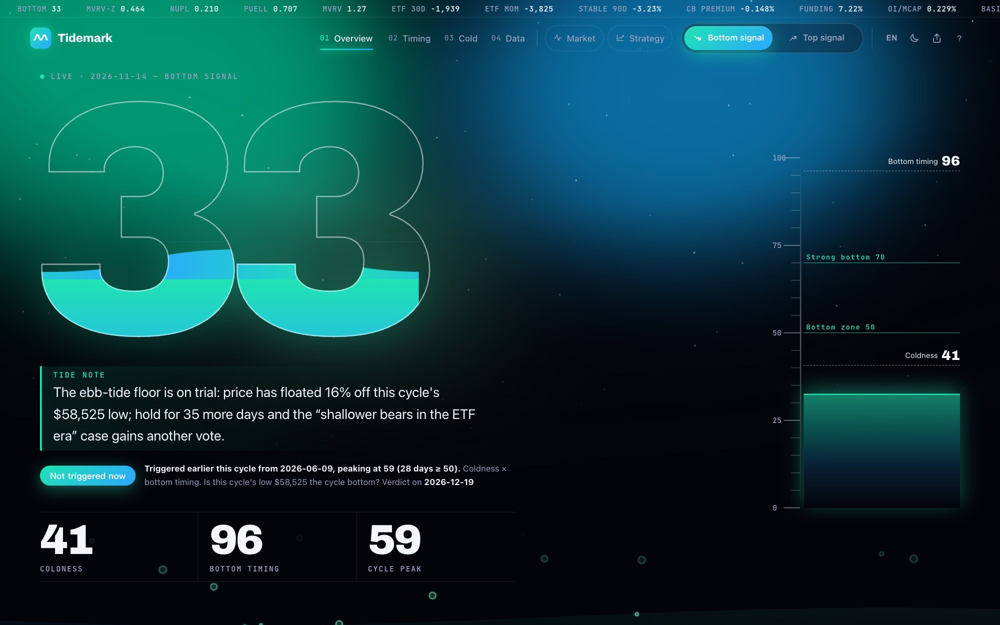
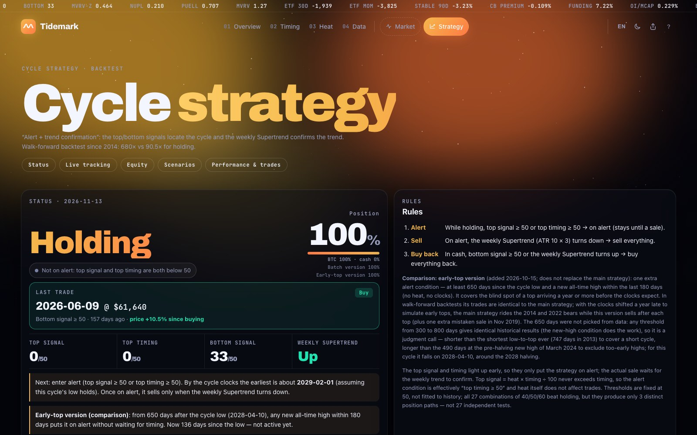
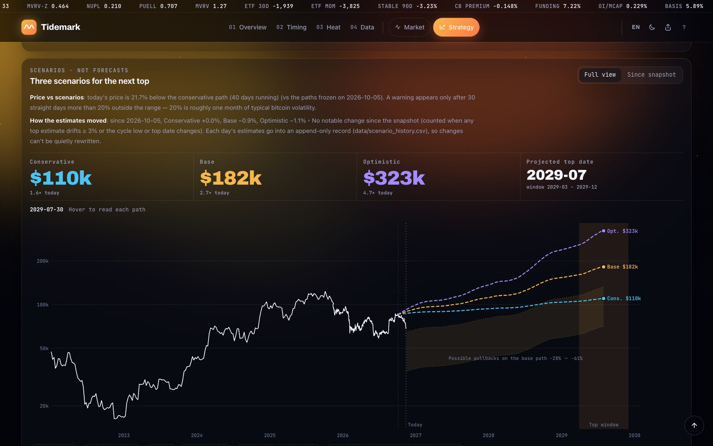
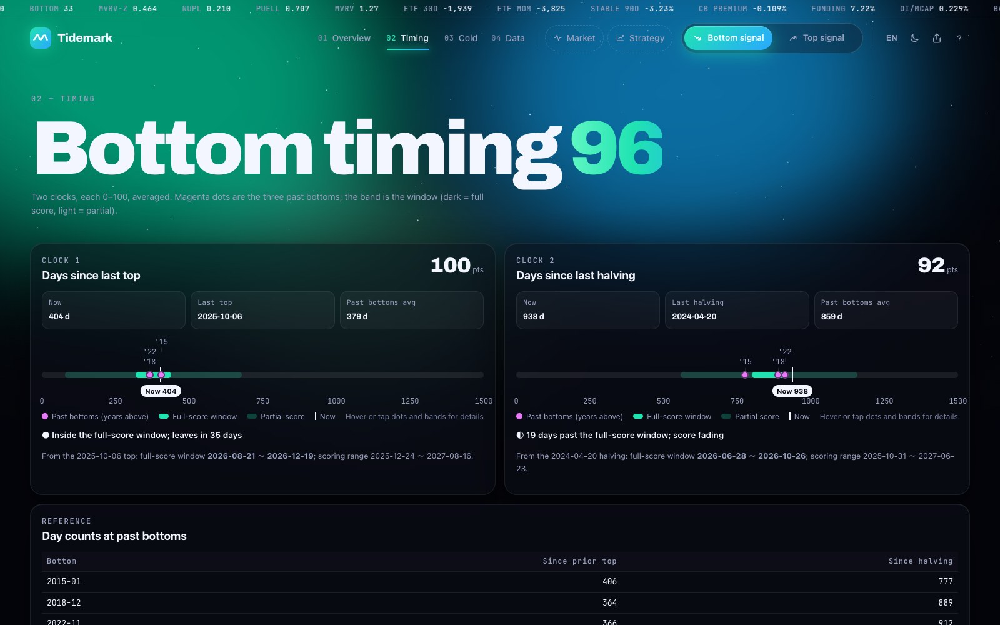
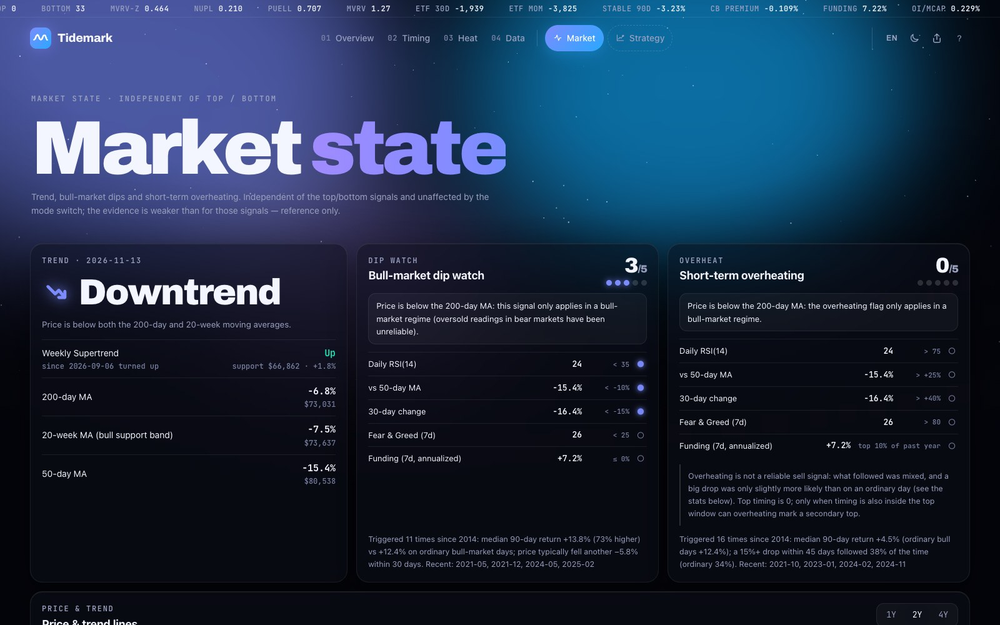
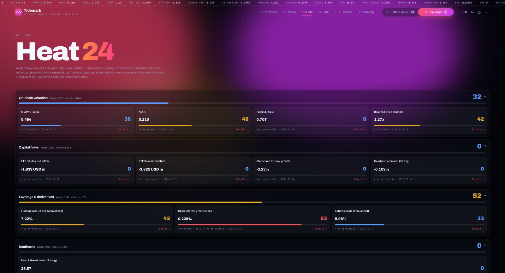
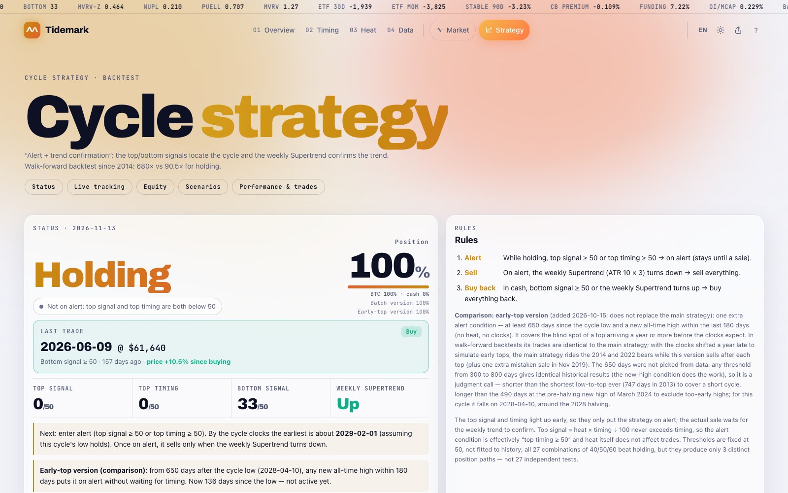
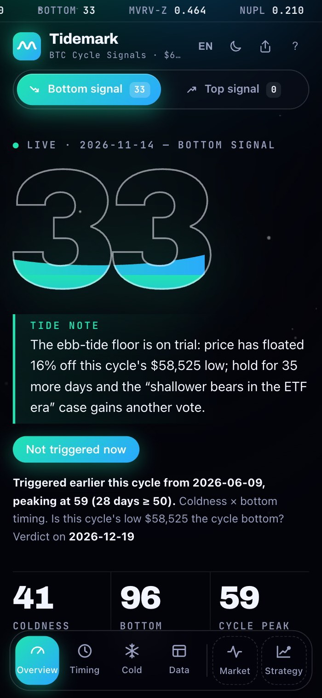
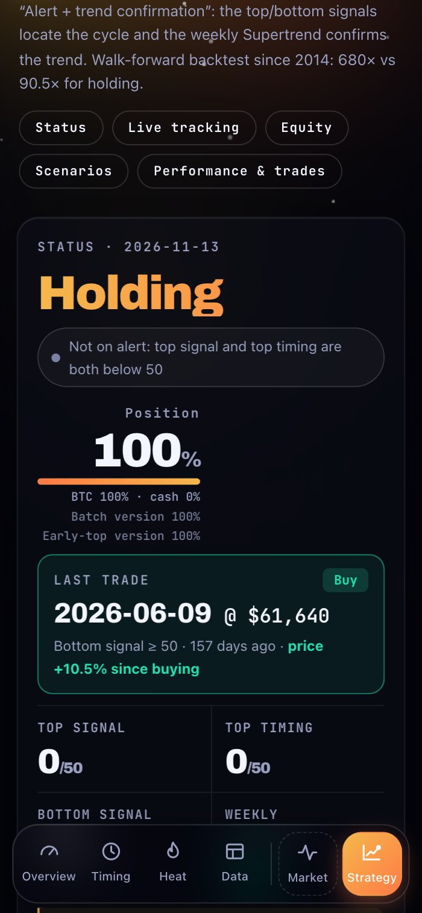
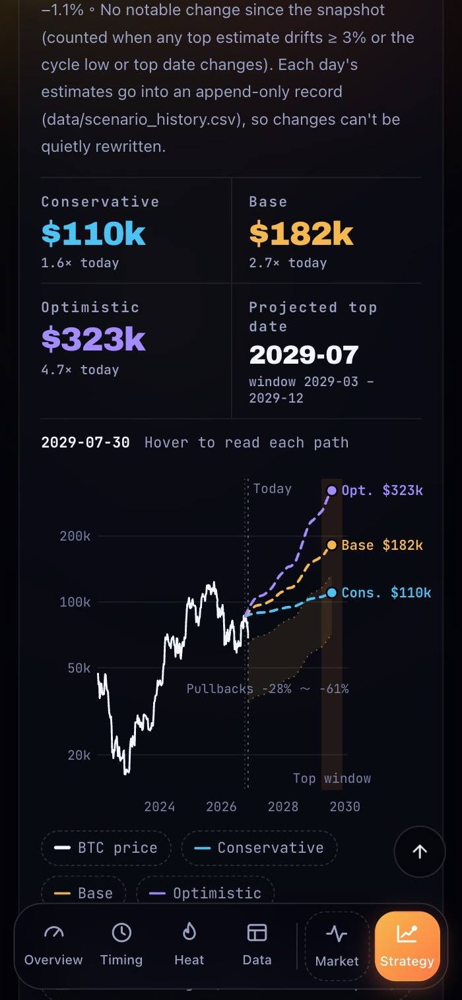
Design: four directions, narrowed to “Aurora Tide”
I built four clickable visual proposals, let people use them and pick what they liked, then combined the winners: moving waves and gauges from Tide, color and mood from Aurora, big numbers and grid order from Swiss. Each of the four modes has its own color, so you always know what kind of information you’re looking at.


The design proposals were made in Chinese.
Liquid big number
The signal score is a huge outlined number. The “water” inside rises to match the score and keeps moving.
Different motion for tops and bottoms
Top mode has a fast, rising tide. Bottom mode has slow deep-sea swells and bubbles drifting up from the seabed.
Tide note
One sentence on today’s state, picked from templates by the day’s data. It only describes the data and makes no predictions.
Operations: no one watching, nothing breaking
flowchart TB CRON[cron-job.org
daily at UTC 00:15] --> GA[GitHub Actions] SCHED[GitHub schedule
backup, skips if already updated] -.-> GA GA --> RUN[run.py] RUN --> SRC[sources.py
fetch 8 public data sources
on failure keep old data, mark stale] SRC --> SCO[scoring.py heat · coldness · timing] SCO --> STR[strategy.py round-by-round backtest] SCO --> SCN[scenarios.py three scenarios] SCO --> MID[midterm.py market state] STR & SCN & MID --> OUT[latest.json · pages in each language · og.png · CSV] OUT --> CHK{checks.py automatic checks} CHK -- pass --> GIT[commit] --> PAGES[Website] CHK -- fail --> STOP[Stop · keep yesterday’s site] OUT --> EV[events.py detect key events] --> LINE[LINE alerts] PAGES --> GC[GoatCounter anonymous traffic stats]
Tech choices
Python (pandas, numpy, requests, Pillow) generates static HTML. The data is embedded in the page. There is no backend server.
Reliability is a requirement
If one data source fails, its data is marked as old and the run keeps going. If the automatic checks fail, nothing is published. The platform scheduler ran about 5 hours late, so an outside trigger now starts the run on time, with a backup.
Two languages
Text is written as “Chinese | English” pairs. One program outputs both language versions, and a check makes sure no Chinese is left on the English page.
Success metrics and risk management
| Metric | How it’s tracked |
|---|---|
| Data on time | Updates daily at UTC 00:15; late data is marked as old |
| Correct output | If the automatic checks fail, nothing is published |
| Strategy credibility | Results after the freeze and the frozen scenarios are compared with real data every day |
| Usage | Anonymous visits per page (GoatCounter) |
| Risk | Response |
|---|---|
| A data source goes down or gets blocked | Main + backup sources; keep the old value and mark it |
| Overfitting | Round-by-round backtests, parameters fixed in advance, a freeze date |
| Data licensing | Only sources that allow public use; anything else stays off the site |
| Being read as investment advice | Scenarios marked as not forecasts; a site-wide disclaimer |

Scope and roadmap
Live
- Top and bottom signals
- Cycle strategy and scenarios
- Market state
- Automatic checks and sharing
Next
- Connect LINE alerts
- 2026-12-19 bottom verdict
- Review traffic data
Later
- Paid holder data (only with a public-use license)
- Yearly review of post-freeze results
Won’t do
- Trading or orders
- Personal holdings
- Price forecasts or odds
- Short-term buy/sell signals
Reflection
- Negative results count tooMost of the research ended with “this doesn’t work”. Keeping those things out of the product mattered more than adding one more impressive-looking feature.
- Honesty builds more trust than pretty numbersCalling out the backtest’s limits and setting a freeze date to be tested against — that is the principle I care about most in a data product.
- Promising less is a product decision tooThe mid-term feature went from “signal” to “reference”, and the scenarios have no odds. Both match the promise to the strength of the evidence.
- Write the boundaries downA clear “won’t do” list (no trading, no holdings, no forecasts) makes every new request quick to judge.